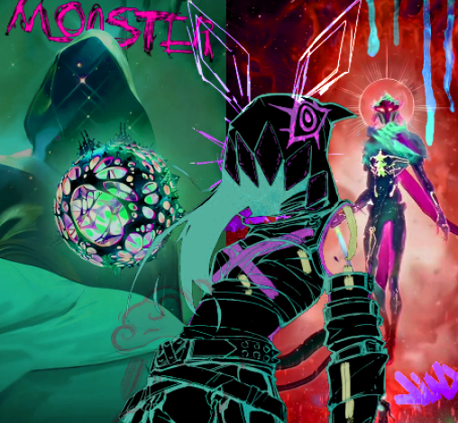

← Grįžti į projektus

Mėnulio logotipų serija
Projektas skirtas eksperimentuoti su vieno simbolio — mėnulio — interpretacijomis. Kiekvienas variantas atskleidžia kitokį charakterį: nuo minimalizmo iki ekspresyvaus koliažo.
1 / 6

Koliažo kompozicija — Adobe Photoshop ir Illustrator.